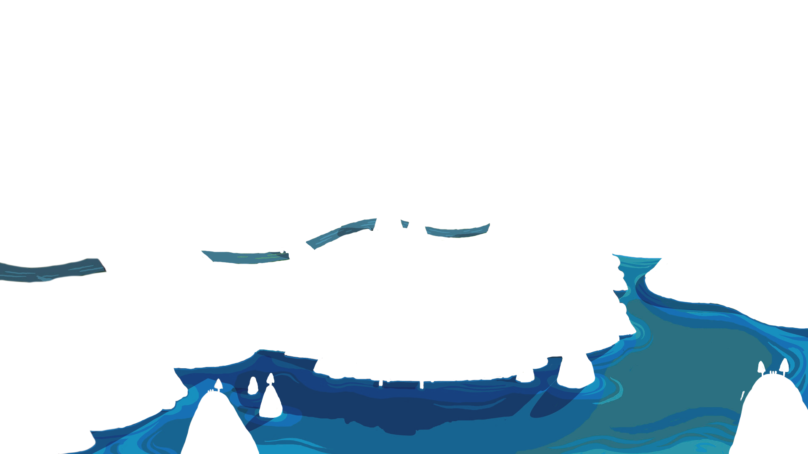
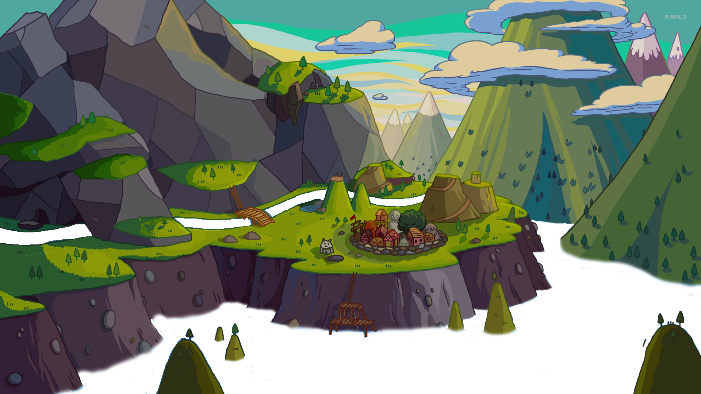

<div class="bg-container">
    
    
    <div class="bg-water">
        
    </div>
    <div class="bg-water xtra">
        
    </div>
    
    


    <svg>
        <filter id="turbulence" x="0" y="0" width="100%" height="100%">
          <feTurbulence id="sea-filter" numOctaves="3" seed="2" baseFrequency="0.02 0.05"></feTurbulence>
          <feDisplacementMap scale="20" in="SourceGraphic"></feDisplacementMap>
        </filter>
        <animate xlink:href="#sea-filter" attributeName="baseFrequency" dur="120s" keyTimes="0;0.5;1" values="0.02 0.06;0.04 0.08;0.02 0.06" repeatCount="indefinite"/>
    </svg>
    
</div>


